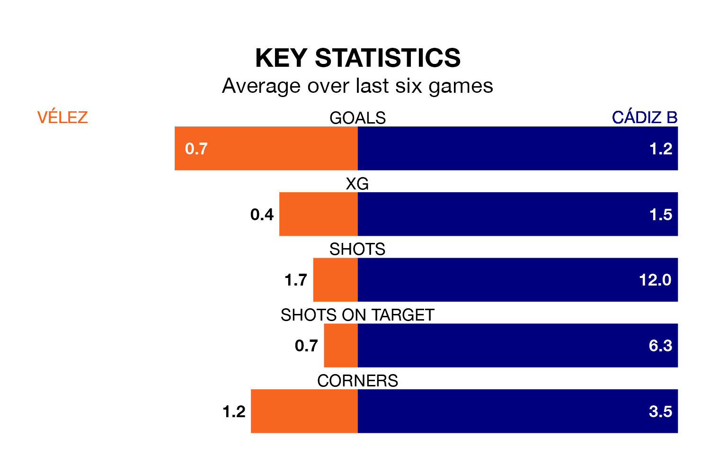

Cádiz B are strong favourites to take all three points despite Vélez's home advantage in Sunday's early match at the Estadio Vivar Téllez.
*Betting Company* are offering odds of 1.6 on Cádiz B sealing the win, with the visitors sitting 10th in the Segunda División RFEF Group 4 table.
Vélez, who are 12th in the league behind Cádiz B, are priced at 5 to win. A draw is set at 3.4.
Vélez are in terrible form in the Segunda División RFEF Group 4, with no wins and two draws from their last six games.
With a win and three draws over that period, Cádiz B's form is better – they have taken six points from 18, compared to the home team's two.
With 30 goals in 27 games so far this season, the visitors are scoring more than average in the league with 1.1 goals per game. But they are conceding more than average too, letting in 34 goals at a rate of 1.3 per game.
Vélez, meanwhile, are average scorers, with 1.0 goal per game. They have conceded 1.4 goals per game.
In the last five years, Vélez and Cádiz B have played each other on five occasions. Vélez won two of them, Cádiz B one, and they drew twice.
On average, Vélez scored 1.2 goals and Cádiz B 0.6 in those matches.
Their last meeting was on November 11, when they played out a 0-0 draw.
Vélez's last match was on March 17, a 4-1 loss against Union Estepona CF.
Cádiz B lost 2-1 against Sevilla B last time out, also on March 17, with Borja Vazquez Doña on the scoresheet.
Updated: 10:19 (UTC), 22/03/24